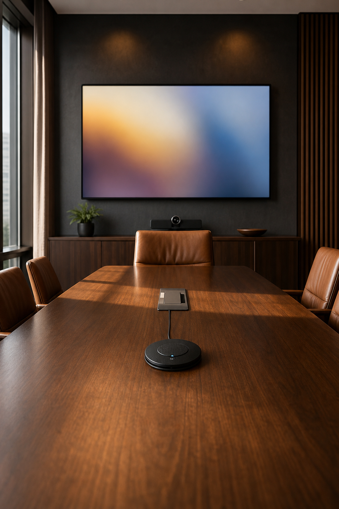
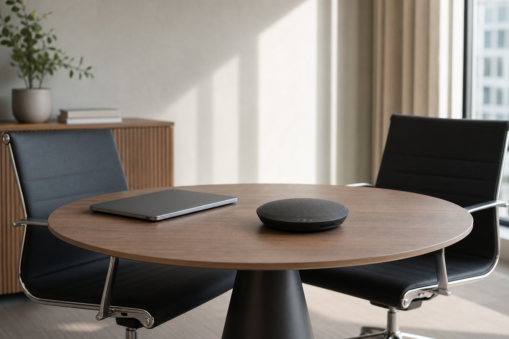

Eight people around a table. One laptop driving a 55" display. A speakerphone in the middle that sounds like it's underwater. That's still a meeting — and it's still where decisions get made.
Small rooms get the leftover kit and the leftover attention. They shouldn't. The fix is usually modest: one clear mic path, one readable screen, light that doesn't silhouette faces on camera.
What "good" looks like in a boardroom of eight
- Everyone can hear the person at the far end without leaning in
- Slides are legible from the last chair
- Hybrid guests aren't listening to a laptop mic aimed at the ceiling
- Someone knows how to switch inputs without a ten-minute hunt

Audio first
A single boundary or gooseneck mic (or a decent conference bar) beats four people shouting at a phone. If you're hybrid, put the remote participants on speakers that the room can hear — and mute the laptop so you don't get echo.
Video and lighting
Camera at eye level, not up a bookshelf. Key light in front of faces, not a bright window behind them. You don't need a studio; you need to stop looking like a witness-protection silhouette.

Don't overbuild
A small meeting doesn't need a line-array and a LED wall. It needs reliability and a one-page how-to left in the room. If the system takes a specialist every time someone wants to share a deck, the system failed.
Common misses
- Assuming "the TV has a speaker" is enough for hybrid
- No labeled inputs on the table plate
- Leaving the room dark so the screen "pops" — and faces disappear
Treat the small room like a show with a short guest list. Same craft, smaller footprint.
Planning a small meeting that still matters?
We'll close the AV gap without overengineering the room.
Start a project